附录 1：日麻役种表 ¶
一番
断幺九
ダンヤオキュウ
和牌时不包含幺九牌。
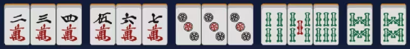
抢杠 チャンカン
别家补杠时所补杠牌为你和的牌。暗杠除国士无双外不可抢。
岭上开花 リンシャン
开杠后用摸到的岭上牌和牌。
海底摸月 ハイテイ
最后一张牌自摸和牌。
河底捞鱼 ホウテイ
最后一张牌别家放铳和牌。
立直 门前清限定 リーチ
门前清听牌时可花费 1000 点立直。
一发 门前清限定 イッパツ
立直后一巡内无人鸣牌状态下和牌。鸣牌破坏一发。
门前清自摸和 门前清限定 ツモ
立直后自摸和牌。
平和 门前清限定 ピンフ
和牌牌型为 4 个顺子 + 非幺九雀头，听牌为两面听。
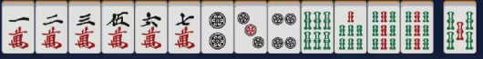
一杯口 门前清限定 イーペーコー
有两组一样的顺子。
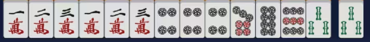
自风牌 トン・ナン・シャ・ペイ
自风牌组成刻子或杠子。
场风牌 トン・ナン・シャ・ペイ
场风牌组成刻子或杠子。
三元牌 ハク・ハツ・チュン
三元牌组成刻子或杠子。
宝牌 不单独成役 ドラ
宝牌指示牌的下一张牌。
赤宝牌 不单独成役 アカドラ
牌面为红色的 5m、5p、5s 牌。
里宝牌 不单独成役 リードラ
立直和牌时可翻。宝牌指示牌下的牌的下一张牌。
二番
小三元 ショウサンゲン
包含两种三元牌的刻子 / 杠子 + 剩下那种的雀头
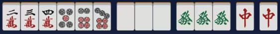
三杠子 サンカンツ
一人开杠三次。
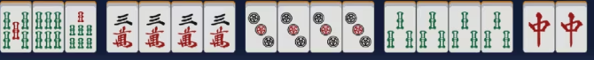
三暗刻 サンアンコウ
拥有三组不是由碰形成的刻子。注意双碰听牌时荣和不算三暗刻。四暗刻双碰听牌时荣和算三暗刻。
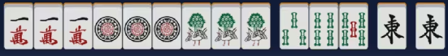
混老头 ホンロウトウ
和牌时只含老头牌和字牌

对对和 トイトイ
和牌时为 4 组刻子 + 雀头。
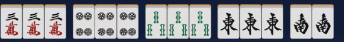
三色同顺 副露减 1 番 サンショクドウシュン
有万子、筒子、索子数字相同的顺子牌。

三色同刻 サンショクドウコウ
有万子、筒子、索子数字相同的刻子牌。

混全带幺九 ホンチャンダイヤオキュウ
所有顺子牌均带老头牌，所有刻子牌均是幺九牌刻子，雀头是幺九雀头
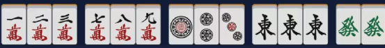
一气通贯 副露减 1 番 イッツートウカン
同花色组成 123、456、789 三组顺子。
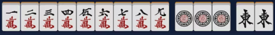
两立直 门前清限定 ダブルリーチ
第一巡无人鸣牌立直。
七对子 门前清限定 チートイツ
七种不同的对子。注意一个暗杠 + 五组对子不构成七对子，一个暗刻 + 五组对子自然不构成七对子听牌。
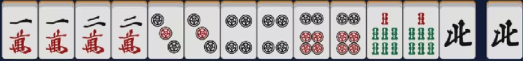
三番
混一色 副露减 1 番 ホンイツ
只包含 1 种花色 + 字牌。

纯全带幺九 ジュンチャンダイヤオキュウ
不包含字牌的混全带幺九。即有顺子、每个顺子都带老头牌、每个刻子都是老头牌、雀头是老头牌。
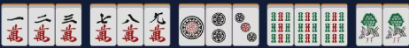
二杯口 门前清限定 リャンペーコー
含两组一杯口。经常容易与七对子冲突，一般满足二杯口时均不计七对子。

六番
清一色 チンイツ
只包含一种数牌花色。
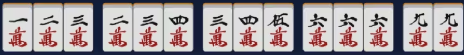
满贯
流局满贯 フローグランドスラム
荒牌流局时，牌河的牌没有被别家鸣过，且全是幺九牌
役满
大三元 ダイサンゲン
带白、发、中的刻子 / 杠子。
Tip
可以与四杠子、字一色、四暗刻、四暗刻单骑、天和、地和叠加，最多五倍役满 160000 点。
小四喜 ショウスーシー
带风牌的三种刻子 / 杠子 + 剩下一种风牌的雀头。
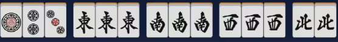
Tip
可以与四杠子、字一色、四暗刻、四暗刻单骑、天和、地和叠加，最多五倍役满 160000 点。
四杠子 スーカンツ
一人开杠四次。
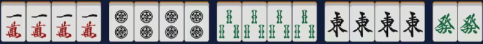
Tip
可以与大三元、小四喜、大四喜、清老头、字一色、四暗刻、四暗刻单骑叠加，最多六倍役满 192000 点。
清老头 チンロウトウ
牌中只包含老头牌。
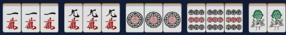
Tip
可以与四杠子、四暗刻、四暗刻单骑、天和、地和叠加，最多四倍役满 128000 点。
字一色 ツーイーソー
牌中只包含字牌。
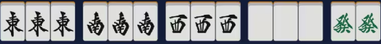
Tip
可以与大三元、小四喜、大四喜、四杠子、四暗刻、四暗刻单骑、天和、地和叠加，最多六倍役满 192000 点。
绿一色 リューイーソー
牌中只包含 2s、3s、4s、6s、8s、6z。
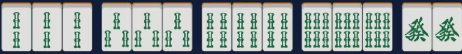
Tip
可以与四杠子、四暗刻、四暗刻单骑、天和、地和叠加，最多四倍役满 128000 点。
四暗刻 スーアンコウ
牌由四组暗刻 / 暗杠 + 一个雀头组成，且双碰听牌自摸和。注意双碰听牌时荣和算三暗刻，放铳牌相当于使一个刻称为明刻。
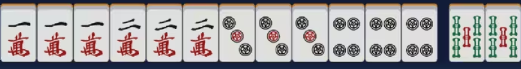
Tip
可以与大三元、小四喜、大四喜、清老头、字一色、绿一色、天和、地和叠加，最多五倍役满 160000 点。
国士无双 コクシムソウ
牌组合为 1m, 9m, 1p, 9p, 1s, 9s, 1z, 2z, 3z, 4z, 5z, 6z, 7z 再加以上十三种牌中的任何一种，且听牌时只听一张牌。
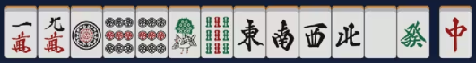
Tip
可以与天和、地和叠加，最多两倍役满 64000 点。
九莲宝灯 チューレンポウトウ
牌组合为某一花色的 1,1,1,2,3,4,5,6,7,8,9,9,9 再加该花色的任何一张牌，且听牌时只听一张牌。
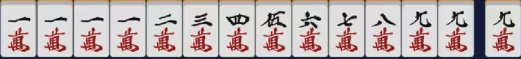
Tip
可以与天和、地和叠加，最多两倍役满 64000 点。
天和 テンホウ
庄家第一巡自摸和牌。
Tip
可以与大三元、小四喜、清老头、字一色、绿一色、四暗刻、四暗刻单骑、国士无双、九莲宝灯、大四喜、四暗刻单骑、国士无双是三面、纯正九莲宝灯叠加，最多六倍役满 192000 点。不过由于纯靠运气且概率极低，因此这种役满经常不被重视。
地和 チーホウ
闲家第一巡无人鸣牌的状态下自摸和牌。
Tip
可以与大三元、小四喜、清老头、字一色、绿一色、四暗刻、四暗刻单骑、国士无双、九莲宝灯、大四喜、四暗刻单骑、国士无双是三面、纯正九莲宝灯叠加，最多六倍役满 192000 点。不过由于纯靠运气且概率极低，因此这种役满经常不被重视。
两倍役满
大四喜 ダイスーシー
由东南西北四种风的四组刻子组成再加任意雀头。
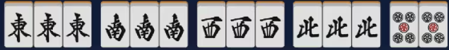
Tip
可以与字一色、四暗刻、四暗刻单骑、天和、地和叠加，最多五倍役满 160000 点。
四暗刻单骑 スーアンコウダンキ
牌由四组暗刻 / 暗杠 + 一个雀头组成，且听牌单骑和。荣和时仍然成立。

Tip
可以与大三元、小四喜、大四喜、清老头、字一色、绿一色、天和、地和叠加，最多六倍役满 160000 点。
国士无双十三面 コクシムソウジュウサンメン
牌组合为 1m, 9m, 1p, 9p, 1s, 9s, 1z, 2z, 3z, 4z, 5z, 6z, 7z 再加以上十三种牌中的任何一种，且听牌时听十三面牌。
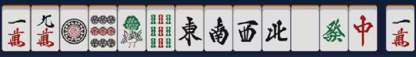
Tip
可以与天和、地和叠加，最多三倍役满 96000 点。由于在听牌前不抓到相同牌的概率极低，因此绝大部分情况下，国士无双十三面都是在国士无双已可和牌的前提下选择振听听牌来追自摸国士无双十三面。如果本局牌山余 20 张以上且幺九牌余至少 8 张时推荐此做法。
纯正九莲宝灯 ジュンセイチューレンポウトウ
牌组合为某一花色的 1,1,1,2,3,4,5,6,7,8,9,9,9 再加该花色的任何一张牌，且听牌时只听一张牌。
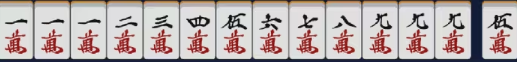
Tip
可以与天和、地和叠加，最多两倍役满 64000 点。由于在听牌前不抓到相同牌的概率极低，因此绝大部分情况下，纯正九莲宝灯都是在九莲宝灯已可和牌的前提下选择振听听牌来追自摸纯正九莲宝灯。如果本局牌山余 28 张以上且同花色牌余至少 8 张时推荐此做法。